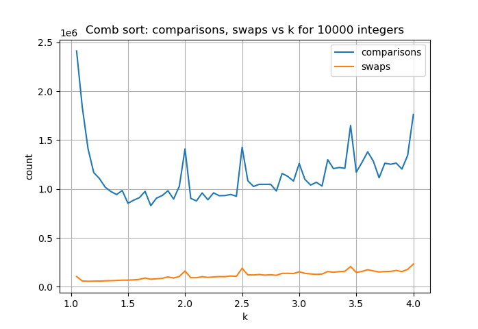

Comb Sort Cutaway
Bubble sort with attitude
What is comb-sort?
Comb-sort is a newer and modified form of bubble-sort. It seeks to improve the time-complexity of the traditional bubble-sort.
How is it different from bubble-sort?
Traditional bubble-sort performs comparisons and swaps of adjacent elements which are not in the ‘correct’ order repeatedly until the entire array is sorted in-place.
Comb-sort introduces the concept of a gap and a so-called shrink factor \(k\) which makes it faster than bubble-sort.
Bubble-sort has a gap of 1 because adjacent elements are compared or swapped. The gap in comb-sort starts with a value of \(floor(n/k)\) and is reduced by \(k\) in successive iterations. Thus it takes values of \(floor(n/k)\), \(floor(n/k^2)\), … until it reaches 1 – which is when it reduces to a bubble-sort.
The value of 1.3 has been arrived at as an optimum value for \(k\) after a lot of experimentation.
What is the advantage of starting with a larger gap?
The larger gap has the effect of throwing the larger elements(“the bunnies”) to the end of the array in minimum number of operations. This would have taken far longer had we to move each element with a gap of 1.
Eventually as the gap shrinks to 1, we have a traditional bubble-sort in the last iterations. However, this bubble-sort has to work a lot less because much of the larger elements are already close to their correct locations.
How does it work in practice? There is only one way to find out.
|
|
Ways to experiment with this code
- Change the value of k. Does it affect the number of comparisons and swaps?
- Try sorting with different arrays.
- Is a value of 1.3 for k really the optimum?
Let us take a look at how the number of comparisons and swaps varies with the value of k. Note how the number of swaps goes down drastically around k=1.3.

The latest version of code, will be available in my Github repository.